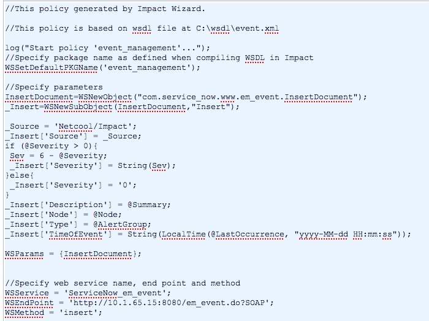

Netcool Impact Server Setup
Contents
1 Overview
The Netcool integration can import events from a Netcool Impact server rather than directly from an ObjectServer starting with the Fuji release. When using an Impact server as an event source, you must create an Impact server web service client to consume your instance's Netcool Alert Status web service.
| |
Note: The following sections illustrate procedures using Netcool Impact version 6.1. The UI may differ in later versions. |
2 Integration Setup
These steps enable the transfer of events between a Netcool Impact server and a ServiceNow instance.
- Activate the Integration - IBM Netcool/OMNIbus plugin on the ServiceNow instance.
- Create an ObjectServer data source and data type on the Impact server.
- Create a web service client on the Impact server.
- Create an EventReader service on the Impact server.
3 Creating an ObjectServer Data Source and Data Type
The Netcool Impact server needs to define the ObjectServer as a data source and the alerts.status table as a data type.
- Log in to the Tivoli Integrated Portal (TIP) at https://<hostname>:16311/ibm/console.
- Navigate to System Configuration > Event Automation > Data Model.
- Create a new ObjectServer data source.
- For Data Source Name, enter a unique data source name. For example, ObjectServer1.
- For Username and Password, provide the credentials for the ObjectServer.
- For primary and backup source Hostname and Port, provide the connection details for the ObjectServer.
-
- Save the data source.
- Right-click the new data source and create a new data type.
- For Data Type Name, enter a unique data type. For example. event_source.
- For Data Source Name, select the data source you created for ObjectServer events.
- For State, select Enabled.
- For Base Table, enter alerts.status.
-
- Save the data type.
{kind=link}
{kind=link}
4 Creating a Web Service Client
The integration can use a web service client to insert events into a ServiceNow instance. These instructions assume you want to insert events into either the event or incident table.
- From a web browser, navigate to the endpoint URL of the target ServiceNow table.
- For the event table navigate to http://<instance_name>/em_event.do?WSDL
- For the incident table navigate to http://<instance_name>/imp_netcool_alerts_status.do?WSDL
- View the page source.
- Save the XML as a file on the Impact server system. For example, C:\wsdl\event.xml.
- Log in to the Tivoli Integrated Portal (TIP) at https://<hostname>:16311/ibm/console.
- Navigate to System Configuration > Event Automation > Policies.
- Click New > Use Wizard > Web Services.
- Enter a name for the web service and click Next.
- Enter the path to WSDL. For example, C:\wsdl\event.xml.
- Enter a package name for the new client stub.
- Select Insert as the Web Service Method and leave the insert parameters blank for now.
- Enable web service security and provide user credentials for the ServiceNow instance.
- Double-click the created web service to bring up the editor. Edit the web service to add the web service parameters.
- Edited Web Service
{kind=link}
4.1 Web Service Parameters
Add the following parameters to the //Specify parameters section of the web service.
_Source = 'Netcool/impact';
_Insert('Source') = _Source;
if (@Severity > 0) {
Sev = 6 - @Severity;
_Insert('Severity') = String(Sev);
}
else {
_Insert('Severity') = '0';
}
_Insert('Description') = @Summary;
_Insert('Node') = @Node;
_Insert('Type') = @AlertGroup;
_Insert('TimeOfEvent') = String(LocalTime(@LastOccurrence, "yyy-MM-dd HH:mm:ss"));
The @ character specifies a field in the Netcool event table. Task records use different numeric values for severity and must be calculated as 6 minus the Netcool event severity, except for severity 0 events.
5 Create an EventReader Service
The Impact server must have an EventReader service to periodically poll the ObjectServer for new events.
- Log in to the Tivoli Integrated Portal (TIP) at https://<hostname>:16311/ibm/console.
- Navigate to System Configuration > Event Automation > New > OMNIbusEventReader.
- Select the General Settings tab.
- For Service Name, enter a unique name for the service.
- For Data Source, select the data source you created for ObjectServer events.
-
- Select the Event Mapping tab.
- For Event Matching, select Stop testing after first match.
- For Actions, select Get Status Events.
- For the event_management policy, select the Active check box.
-
- Start the EventReader service.
{kind=link}
{kind=link}
Contents > Integrate > Vendor Specific Integrations > Event Integrations
Contents > Integrate > Vendor Specific Integrations > Incident Integrations